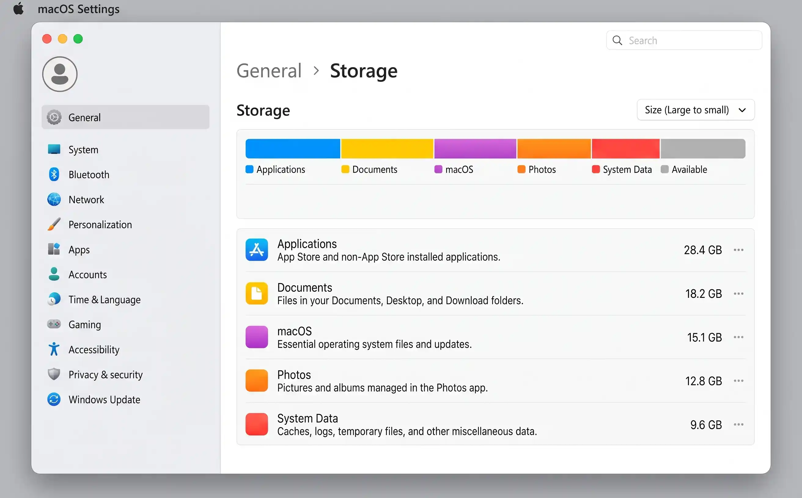
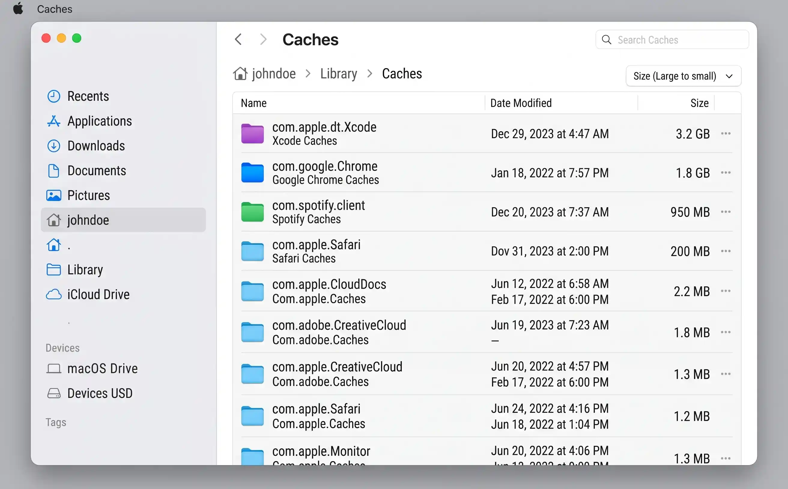
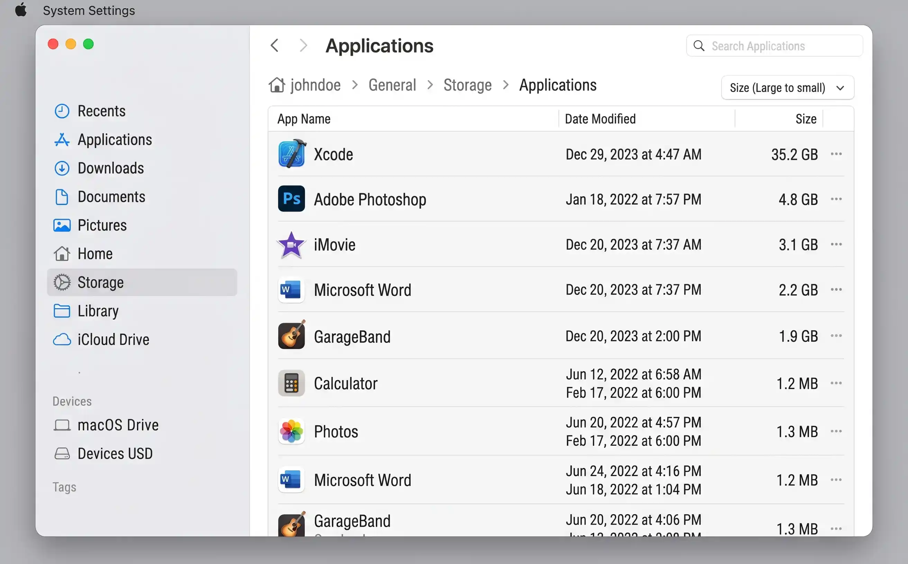

Step 1 — Check what's using your storage
Before deleting anything, you need to know where the space is going. macOS provides a built-in storage breakdown that shows exactly which categories are consuming your disk — and the answer is often surprising. Many people assume photos or music are the culprit, only to discover that System Data, caches, or old applications account for the majority of the usage. If your Mac shares a household with a Windows PC, our Windows 11 storage guide covers the equivalent steps there.
How to view the storage breakdown
The path depends on your macOS version (see also Apple's official Mac storage guide):
- macOS Ventura, Sonoma, and Sequoia: Open System Settings → General → Storage. Wait a few seconds for the colour-coded bar to finish calculating.
- macOS Monterey and earlier: Click the Apple menu → About This Mac → Storage. Click Manage for more detail.
Understanding the colour-coded bar
The horizontal bar divides your disk into categories. Each colour represents a different type of content:
System Data (labelled "Other" on older macOS versions) is the most confusing category. It includes caches, logs, Time Machine local snapshots, Spotlight indexes, and temporary files. It's often the largest single category — and the hardest to shrink, because macOS doesn't give you a simple button to clear it. We'll tackle it in Step 3.
The storage bar can take 15–30 seconds to calculate, especially on a nearly full disk. Wait until the numbers stop changing before making decisions — the initial estimates are often inaccurate.

System Settings → General → Storage on macOS Sonoma. Hover over each colour segment for a precise size. Click any category for details.
Step 2 — Use macOS Storage Management recommendations
macOS has a built-in Storage Management tool with four automated recommendations that can collectively recover 5–20 GB with almost no effort. Most Mac users have never opened it. It's also worth pairing this with a Downloads folder clean-up, since that's often where the largest, most forgettable files accumulate.
How to open it
On macOS Ventura and later, go to System Settings → General → Storage and the recommendations appear right on that screen. On older versions, click Apple menu → About This Mac → Storage → Manage to open the dedicated Storage Management window.
The four recommendations
-
1
Store in iCloud
Moves Desktop, Documents, and Photos to iCloud, keeping only recently accessed files on your Mac. Originals download on demand. Requires an iCloud+ plan with enough space (50 GB starts at 99p/mo).
-
2
Optimise Storage
Automatically removes iTunes films and TV shows you've already watched. The content stays in your iTunes purchase history and can be re-downloaded at any time. Particularly useful if you buy or rent films from the iTunes Store.
-
3
Empty Bin Automatically
Permanently deletes items that have been in the Bin for more than 30 days. This alone can recover gigabytes if you regularly delete files but forget to empty the Bin.
-
4
Reduce Clutter
Shows a list of large files, downloads, and unsupported apps so you can review and delete them. It's essentially a guided clean-up — macOS won't delete anything without your confirmation.
This is the single easiest win. Most people have months of deleted files sitting in the Bin. Enable this once, and it handles itself forever. Right-click the Bin in the Dock and choose Empty Bin now for an immediate clean.
Step 3 — Clear System Data and caches
System Data is the most frustrating storage category because macOS offers no one-click way to reduce it. It's a catch-all for caches, logs, temporary files, Spotlight indexes, and other system resources. On a Mac that's been running for a year or more, this category can easily reach 20–40 GB.
The good news: a significant portion of System Data is safe to delete manually.
Clear user-level caches
-
1
Open Finder → Go → Go to Folder
Press
Cmd + Shift + Gor use the Go menu. Type~/Library/Cachesand press Return. -
2
Review the folders inside
Each folder corresponds to an app. You'll see folders like
com.apple.Safari,com.spotify.client, andcom.google.Chrome. The largest ones are your targets. -
3
Delete the contents of large cache folders
Open each large folder and delete the files inside it — don't delete the folder itself. The app will rebuild its cache as needed. Move files to the Bin, then empty the Bin.
Always delete the files inside a cache folder, never the folder itself. Some apps expect their cache directory to exist and may behave unpredictably if it's missing. When in doubt, restart the app after clearing its cache.
Clear browser caches
Web browsers are among the largest cache consumers. Here's how to clear them directly:
- Safari: Safari → Settings → Privacy → Manage Website Data → Remove All. Also go to Develop → Empty Caches (enable the Develop menu in Settings → Advanced).
- Chrome: Chrome → Settings → Privacy and Security → Clear Browsing Data. Select Cached images and files and set the time range to All time.
- Firefox: Firefox → Settings → Privacy & Security → Cookies and Site Data → Clear Data.
Clear Xcode derived data (developers only)
If you use Xcode, its derived data folder can grow to 10–50 GB or more. Navigate to ~/Library/Developer/Xcode/DerivedData and delete everything inside. Xcode rebuilds it automatically when you next open a project. You can also delete old device support files in ~/Library/Developer/Xcode/iOS DeviceSupport for devices you no longer test on.

The ~/Library/Caches folder often contains several gigabytes of temporary data that is safe to clear. Sort by size to find the biggest offenders.
Step 4 — Find and remove large files
Sometimes the biggest storage wins come from finding a handful of forgotten files — an old virtual machine image, a video project export, a database dump from three years ago. macOS gives you two ways to hunt these down.
Use the Storage Management "Large Files" view
In the Storage Management window (or the storage screen in System Settings), click Documents in the sidebar and switch to the Large Files tab. macOS lists every file on your disk sorted by size, largest first. Scan through the list and delete anything you recognise as no longer needed.
Use Finder search
-
1
Open a new Finder window and press Cmd + F
Make sure the search scope is set to This Mac (not just the current folder).
-
2
Set the search criteria
Click the Kind dropdown and change it to File Size. Set it to is greater than and enter 500 MB (or 1 GB for a broader sweep). Finder will list every file above that threshold.
-
3
Sort by size and review
Click the Size column header to sort largest first. Move anything you don't need to the Bin.
GrandPerspective (free, open-source) and DaisyDisk (paid, beautifully designed) both create visual treemaps of your disk, making it immediately obvious where the space is going. They're especially useful for finding large files buried deep in nested folders that Finder search might miss.
Step 5 — Delete old Time Machine snapshots
If you use Time Machine, macOS creates local snapshots — copies of changed files stored directly on your Mac's internal drive, not on the external backup disk. These are designed to protect you when your backup drive isn't connected, but they can accumulate quickly and consume tens of gigabytes.
This is especially common on MacBook users who only connect their backup drive at home: during a week of travel, daily local snapshots can pile up to 20–30 GB.
Check for local snapshots
Open Terminal (Applications → Utilities → Terminal) and run:
tmutil listlocalsnapshots /
This lists all local snapshots with their dates. If you see a long list spanning weeks or months, that's a significant chunk of your System Data category.
Delete specific snapshots
To delete a single snapshot, use:
sudo tmutil deletelocalsnapshots 2026-09-01-120000
Replace the date string with one from the list above. You'll be prompted for your admin password.
macOS is designed to automatically delete old local snapshots when your disk runs low. However, it doesn't always act quickly enough — especially when you need space right now for a large download or software update. Manually deleting snapshots forces the reclamation immediately.
Deleting local snapshots is safe — it doesn't affect your actual backups on the external drive. But don't turn Time Machine off altogether just to save space. Your backups are your safety net against hardware failure and accidental deletion. Delete snapshots; keep backups.
Step 6 — Uninstall apps properly
On macOS, dragging an app to the Bin removes the application bundle but leaves behind support files, preferences, caches, and login items scattered across your Library folder. Over years of installing and removing software, these orphaned files can add up to several gigabytes.
The manual clean-up method
After dragging an app to the Bin, check these three locations for leftover files (use Go → Go to Folder in Finder, or Cmd + Shift + G):
~/Library/Application Support/[App Name]— saved data, configuration databases, plugins~/Library/Preferences/com.developer.appname.plist— preference files (small, but they accumulate)~/Library/Caches/com.developer.appname— cached data (often the largest leftover)
Delete the matching folders and files, then empty the Bin.
The easy alternative: AppCleaner
AppCleaner (free, by FreeMacSoft) does this automatically. Drag an app onto the AppCleaner window and it finds every associated file across your Library. Review the list, tick what you want to remove, and click Remove. It's one of the most trusted Mac utilities and has been around for over a decade.
Get into the habit of uninstalling apps through AppCleaner rather than dragging them to the Bin directly. This prevents the gradual build-up of orphaned support files that contributes to System Data growth over time.

Dragging an app to the Bin leaves behind support files. AppCleaner (right) finds and removes them all in one step.
Step 7 — Clear mail downloads and attachments
Every time you open or quick-look an email attachment in Apple Mail, macOS downloads a copy to a local cache folder. These cached attachments are never automatically cleaned up, and after years of email they can consume several gigabytes.
Where mail attachments are stored
There are two locations to check:
~/Library/Mail Downloads— older macOS versions store previewed attachments here~/Library/Containers/com.apple.mail/Data/Library/Mail Downloads— the sandboxed location on newer macOS versions
Open each folder (using Go → Go to Folder) and delete everything inside. These are cached copies — the original attachments remain on the mail server and will be re-downloaded if you open them again.
Clearing these folders does not delete any emails or remove attachments from your mail account. It only deletes the locally cached copies that macOS downloaded when you previewed them. Opening the same attachment later simply re-downloads it from the server.
Quick wins — ranked by effort vs. reward
| Action | Time needed | Typical storage saved | Difficulty |
|---|---|---|---|
| Empty the Bin | 30 sec | 1 – 10 GB | Easy |
| Enable Empty Bin Automatically | 1 min | Prevents future build-up | Easy |
| Delete old Time Machine snapshots | 3 min | 5 – 30 GB | Easy (Terminal) |
| Clear browser caches | 2 min | 1 – 5 GB | Easy |
| Clear ~/Library/Caches | 5 min | 2 – 10 GB | Easy |
| Find and delete large files (>500 MB) | 10 min | 5 – 50 GB | Medium |
| Uninstall unused apps with AppCleaner | 10 min | 2 – 15 GB | Easy |
| Clear mail downloads | 3 min | 500 MB – 3 GB | Easy |
| Clear Xcode derived data (developers) | 2 min | 5 – 50 GB | Easy |
| Enable Store in iCloud | 5 min | 10 – 50 GB | Easy |
Common space wasters and typical savings
| Category | What it contains | Typical size on a 2–3 year old Mac | Safe to delete? |
|---|---|---|---|
| System Data / Other | Caches, logs, Time Machine snapshots, Spotlight index | 15 – 60 GB | Caches and snapshots: yes. Logs: yes. Spotlight index: rebuilds itself. |
| Application support files | Orphaned data from deleted apps | 2 – 10 GB | Yes, once you confirm the parent app is gone |
| Xcode derived data | Build artefacts, indexes, logs | 10 – 50 GB | Yes — Xcode rebuilds it |
| Browser caches | Cached web pages, images, scripts | 1 – 5 GB | Yes — browsers rebuild caches automatically |
| Mail downloads | Cached email attachments | 500 MB – 3 GB | Yes — originals remain on the server |
| Old downloads in ~/Downloads | Installers, DMGs, ZIPs, PDFs | 2 – 20 GB | Review first, then yes |
| Time Machine local snapshots | Incremental backup snapshots stored locally | 5 – 30 GB | Yes — doesn't affect your actual backups |
Keeping storage clear going forward
A thorough one-time clean is satisfying, but the real goal is to stop the build-up from happening again. These monthly habits take less than 10 minutes and keep your Mac running smoothly:
- Monthly storage check. Open System Settings → General → Storage on the first of each month. Glance at the bar, note any category that's grown unexpectedly, and address it before it becomes a crisis.
- Empty the Downloads folder. The Downloads folder is the single biggest source of forgotten clutter on most Macs. Sort by date, move anything you still need to a proper location, and delete the rest. Better yet, set a Finder Smart Folder or a Shortcuts automation to flag downloads older than 30 days.
- Uninstall through AppCleaner. Make it a habit: every time you decide you're done with an app, drag it to AppCleaner instead of the Bin. This prevents orphaned support files from accumulating in your Library.
- Keep "Empty Bin Automatically" enabled. One toggle in Storage Management that prevents the Bin from silently consuming 5–10 GB. Set it once and forget it.
- Connect your Time Machine drive weekly. Local snapshots only accumulate when your Mac can't offload them to the backup drive. Plugging in (or connecting over the network) at least once a week keeps snapshots from piling up.
First of the month: check System Settings → Storage (1 min), empty the Downloads folder (3 min), clear browser caches (2 min), empty the Bin (30 sec). That's under 7 minutes to keep your Mac healthy all month.